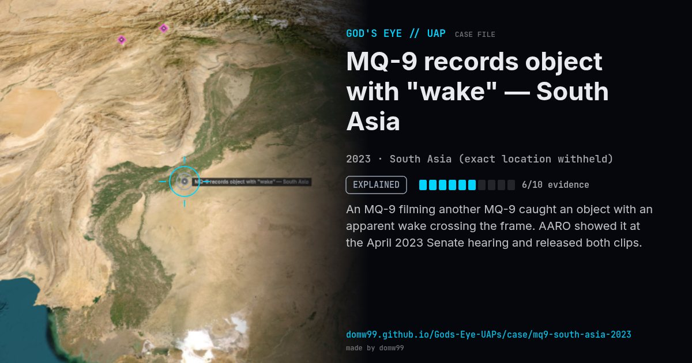

MQ-9 records object with "wake" — South Asia
EXPLAINED

An MQ-9 filming another MQ-9 caught an object with an apparent wake crossing the frame. AARO showed it at the April 2023 Senate hearing and released both clips.
Explanation
AARO resolved the case in February 2024 (“Atmospheric Wakes”): frame-by-frame analysis and flight data showed a commuter aircraft flying near the two MQ-9s, and the apparent wake was the heat signature from its engines.
What was seen
Shape: Object with apparent atmospheric wake
Witnesses: MQ-9 sensor operators
Duration: Seconds to ~2 minutes